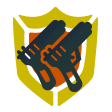
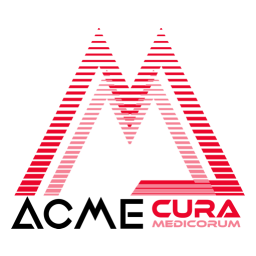

Attack
Vector
The Attack Vector, running Verdant OS, allows for extracurricular network activities.
Bastion Information Center
The Attack Vector, running Verdant OS, allows for extracurricular network activities.
Bastion Maintenance Status
The Attack Vector, running Verdant OS, allows for extracurricular network activities.
Beacon
The Attack Vector, running Verdant OS, allows for extracurricular network activities.
Bastion
Eos
Transfer
The Attack Vector, running Verdant OS, allows for extracurricular network activities.
Mission
Board
The Attack Vector, running Verdant OS, allows for extracurricular network activities.
Douane
The Attack Vector, running Verdant OS, allows for extracurricular network activities.

Eos
Management
System
The Attack Vector, running Verdant OS, allows for extracurricular network activities.

Medicorum
The Attack Vector, running Verdant OS, allows for extracurricular network activities.

Surgical
System
The Attack Vector, running Verdant OS, allows for extracurricular network activities.
System
Central
Banks
The Attack Vector, running Verdant OS, allows for extracurricular network activities.